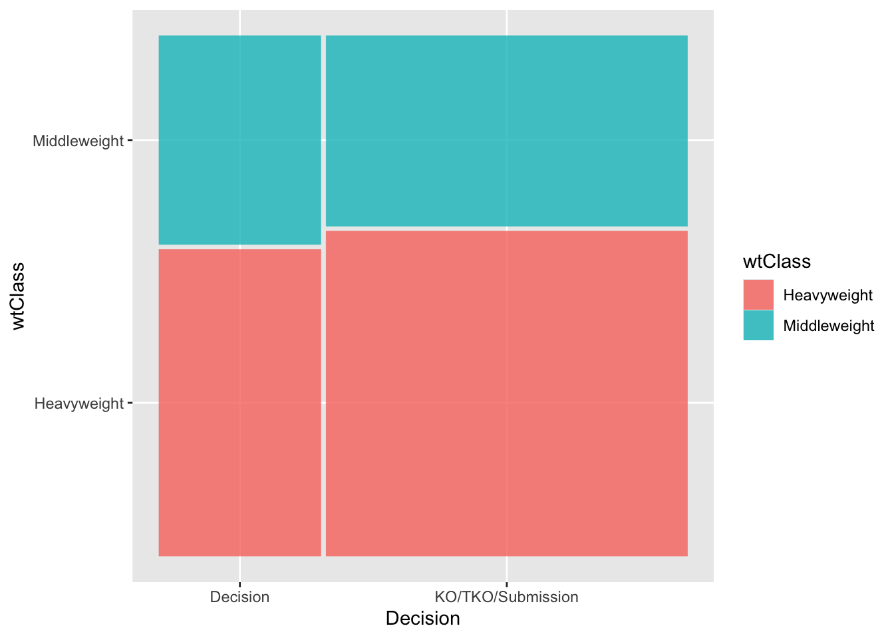
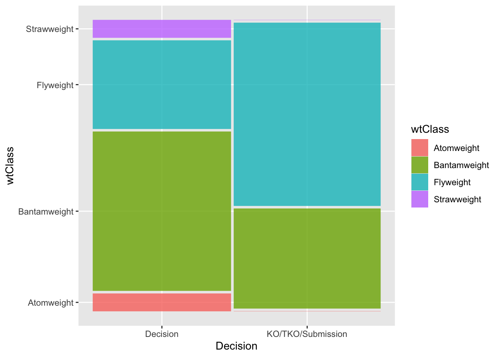
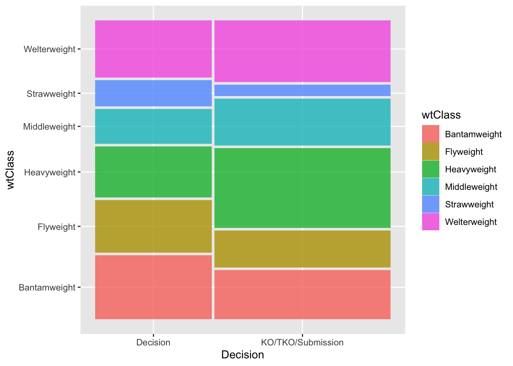

library(tidyverse) #loads package
library(ggplot2)
library(DescTools)
mma <- read_csv("mma.csv") #loads dataMMA Fight Decisions
Variable types
Chi-square test (2x2)
Fisher Exact test
Chi-square test (rxc)
Mosaic plots
Exploring MMA fight decisions by weight category
Welcome video
Introduction
In this module, you will be analyzing data from mixed marshall arts (MMA) fights in order to determine if the weight class of the fighters is related to the type of decision that ended the fight.
NOTE: R is the name of the programming language itself and RStudio is a convenient interface. To throw even more lingo in, you may be accessing RStudio through a web-based version called Posit Cloud. But R is the programming language you are learning :)
Getting started: MMA data
The first step to any analysis in R is to load necessary packages and data.
You can think of packages like apps on your phone; they extend the functionality and give you access to many more features beyond what comes in the “base package”.
Running the following code will load the tidyverse, ggplot2, other packages, and the mma data we will be using in this lab.
TIP: As you follow along in the lab, you should run each corresponding code chunk in your .qmd document. To “Run” a code chunk, you can press the green “Play” button in the top right corner of the code chunk in your .qmd. You can also place your cursor anywhere in the line(s) of code you want to run and press “command + return” (Mac) or “Ctrl + Enter” (Windows).
TIP: Using a hashtag in R allows you to add comments to your code (in plain English). Data scientists often use comments to explain what each piece of the code is doing.
We can use the glimpse() function to get a quick look (errr.. glimpse) at our mma data. The glimpse code provides the number of observations (Rows) and the number of variables (Columns) in the dataset. The “Rows” and “Columns” are referred to as the dimensions of the dataset. It also shows us the names of the variables (date, day, …, wtClass) and the first few observations for each variable (e.g. the first two fights in the dataset took place on December 4, 2010 and May 15, 2010).
glimpse(mma)Rows: 28,771
Columns: 20
$ date <chr> "12/4/10", "5/15/10", "6/12/09", "1/23/09", "3/25/22", …
$ month <dbl> 12, 5, 6, 1, 3, 4, 2, 5, 1, 9, 1, 8, 6, 12, 2, 3, 1, 12…
$ year <dbl> 2010, 2010, 2009, 2009, 2022, 2021, 2021, 2018, 2018, 2…
$ event <chr> "Strikeforce: Henderson vs. Babalu 2", "Strikeforce: He…
$ championship <lgl> FALSE, FALSE, FALSE, FALSE, FALSE, FALSE, FALSE, FALSE,…
$ decision <chr> "Decision - Unanimous", "Submission", "TKO", "Unanimous…
$ decision_group <chr> "Decision", "Submission", "KO/TKO", "Decision", "KO/TKO…
$ round <chr> "3", "1", "2", "3", "1", "3", "3", "2", "1", "3", "1", …
$ time <time> 05:00:00, 00:56:00, 01:47:00, 05:00:00, 01:37:00, 05:0…
$ p1_result <chr> "L", "W", "L", "L", "L", "L", "W", "L", "L", "W", "L", …
$ p1_id <dbl> 2504991, 2504991, 2504991, 2504991, 4239497, 4239497, 4…
$ p1_name <chr> "Aaron, Tom", "Aaron, Tom", "Aaron, Tom", "Aaron, Tom",…
$ p1_country <chr> "USA", "USA", "USA", "USA", "ESP", "ESP", "ESP", "ESP",…
$ p1_sex <chr> "M", "M", "M", "M", "M", "M", "M", "M", "M", "M", "M", …
$ p2_result <chr> "W", "L", "W", "W", "W", "W", "L", "W", "W", "L", "W", …
$ p2_id <dbl> 2504993, 2504992, 2504956, 2514253, 5078428, 4236955, 4…
$ p2_name <chr> "Ricehouse, Matt", "Steenberg, Eric", "Voelker, Bobby",…
$ p2_country <chr> "USA", "CAN", "USA", "USA", "BRA", "USA", "ENG", "USA",…
$ p2_sex <chr> "M", "M", "M", "M", "M", "M", "M", "M", "M", "M", "M", …
$ wtClass <chr> "Lightweight", "Catchweight", "Welterweight", "Lightwei…ERROR? Did you get a error message that says could not find function "glimpse"? This means you need to load the tidyverse package. You can do this by running the code library(tidyverse) from the previous code chunk. A shortcut is to hit the “fast-forward” button (next to the “Play” button in your code chunk), which will run all code chunks above your current one.
TIP: Type your answers to each exercise in the .qmd document.
TIP: To determine if a variable is categorical, read more about variable types here.
MMA lingo
Before proceeding with any analysis, let’s make sure we know some MMA lingo in order to understand what information is contained in each variable (column) in our dataset.
The basics
- Fighters are in different weight classes and may only fight in their own class or higher weight classes.
- There are 8 classes for men and 4 for women.
- Fights consist of rounds (typically 3).
- Fights may end early due to:
- A submission: one fighter “taps out” or concedes.
- Knock out (KO) or Technical knock out (TKO) (the referee stops the fight).
- If a fight is not stopped early, then the winner is determined by judges (known as a decision).
- The decision could be unanimous (U) if all judges agree, or split (S) if not all judges agree.
- Championship fights are those which determine who is the champion of a given weight class.
Totally new to MMA? See this site: INTRODUCTION TO MMA
Variable descriptions
The data used for the following examples is MMA fight data. The data is a SAMPLE of fights from 1991 to 2023 (not all fights in that period). In addition to data about the fight generally (date, name of event, whether it was a “championship” fight etc) data is provided for each fighter participating in the fight (columns starting with p1 are the first fighter and p2 the second).
| Variable | Definition | Example_Values |
|---|---|---|
| date | date of the event (mdy) | 10/12/2023 |
| month | month of the event | 10 |
| year | year of the event | 2023 |
| event | name of the event | UFC 1: The Beginning |
| championship | is the event a championship event | TRUE/FALSE |
| decision | fight result | TKO (Injury) |
| decision_group | aggregated groups of decision variable | KO/TKO |
| round | how many rounds the fight lasted | 3 |
| time | time the fight ended | 4:42 |
| p1_result | result of the fight for fighter 1(2) | W |
| p1_id | a unique ID for fighter 1(2) | 2354059 |
| p1_name | full name of fighter 1(2) | Shamrock, Ken |
| p1_country | home country of fighter 1(2) | USA |
| p1_sex | sex of fighter 1(2) | M |
| wtClass | aggregated groups of Weight Class | Heavyweight |
Viewing your data
You saw that glimpse() is one way to get a quick look at your data. Often, you’ll want to view your whole dataset. There are two ways to do this:
TIP: Recall that RStudio is split into four quadrants: Source (upper left), Environment (upper right), Console (bottom left), and Files/Plots/Packages/Help/Viewer (bottom right)
- type
View(mma)in your Console and then click return/Enter on your keyboard. - OR, in your Environment tab, double click the name of the dataset you want to view.
This will open up your data in a new viewer tab so that you can view it like a spreadsheet (like Google Sheets or Excel*). Once open, you can sort the data by clicking on a column.
*Unlike Google Sheets or Excel, however, you won’t be able to edit the data directly in the spreadsheet.
TIP: When viewing the data, clicking on a column once will sort the data according to that variable in ascending order; clicking twice will sort in descending order.
Chi-square Test Overview
The chi-square test is a test used to determine if there is a significant association between two categorical variables. It compares the observed frequencies of the different categories with the expected independent frequencies. The hypotheses involved are:
- \(H_0:\) there is no assocation between the two variables (null hypothesis)
- \(H_a:\) there is an assocation between the two variables (alternative hypothesis)
We will use the MMA data to explore the test and determine if, since the year 2020, fighter weight class and the decision of a fight are associated. In order to perform the analyis we will produce a “contingency table” displaying the data (note: To perform a chi-square test in many software packages, it is often not necessary to format the data into a contingency table. Many packages can take data from a standard rectangular data table and pass it through a chi-square function.). Additionally, we will illustrate how to present the data in a more visual format.
Chi-square Test Example
Preparing the data
We first select the variables of interest, and “filter” the data to the categories we wish to compare and the years of interest.
# Select, filter, and prepare relevant data for analysis
data1 <- mma |>
select(year, wtClass, decision_group) |>
filter(year >= 2020) |>
filter(wtClass == "Middleweight" | wtClass == "Heavyweight") |>
mutate(decision = if_else(decision_group == "Decision", "Decision",
"KO/TKO/Submission"))TIP: in logical expressions, a double equal sign is used “==”.
TIP: in logical expressions, “|” is “OR”
TIP: mutate is a dplyr function that allows us to create new variables.
TIP: if_else returns the first value listed (“Decision”) if the logical expression is true, otherwise it returns the second value listed (“KO/TKO/Submission”)
View the “data1” data frame and confirm that you understand what the code produced.
Visualizing the data: the contingency table
A contingency table rows (r) are categories of the first variable and columns (c) those of the second variable. The “r x c” table cells are the counts for each combination of categories. In our example, both variables have two categories so we have a “2x2” contingency table:
table(data1$wtClass, data1$decision )
Decision KO/TKO/Submission
Heavyweight 241 570
Middleweight 164 334TIP: select the variable from “data1” using a “$” followed by the name of the variable.
We see that among the heavyweight fights, 241 ended with a decision.
The R package “DescTools” we loaded includes a function that will add percentages (by row, column, or total) as well as the totals for rows/columns (known as “margins”) to the table.
PercTable(data1$wtClass, data1$decision, rfrq = "010",
margins = c(1,2))
Decision KO/TKO/Submission Sum
Heavyweight freq 241 570 811
p.row 29.7% 70.3% .
Middleweight freq 164 334 498
p.row 32.9% 67.1% .
Sum freq 405 904 1'309
p.row 30.9% 69.1% .
TIP: the rfrq option identifies which percentages to display. A “1” in the second position as in our example adds row percentages. Changing the first position to “1” would give total percentages and to the third position column percentages.
TIP: we provide a vector, c(), with values 1 (row) and 2 (column) of which margins to add to the table. If we input c(1) we would get only the row totals.
We added row percentages; notice that the percentages total to 100% for each row of the table, including for the column totals row.
Visualizing the data: Mosaic plot
A Mosaic plot visualizes the contingency table using rectangles with widths proportional to the counts for each category or combination of categories.
library(ggmosaic)
ggplot(data1) +
geom_mosaic(aes(x = product(wtClass, decision), fill = wtClass)) +
xlab('Decision')
Conducting the Chi-square test
We first write the hypotheses presented earlier for our example:
- \(H_0:\) there is no assocation between weight class and whether the fight ended in a decision or not (null hypothesis)
- \(H_a:\) there is an assocation between weight class and whether the fight ended in a decision or not (alternative hypothesis)
The command “chisq.test” with the two variables as inputs performs the Chi-square test.
wt_decision.chisq <- chisq.test(data1$wtClass, data1$decision)TIP: save the test results into an object (here named “wt_decision.chisq”) in order to later extract all information produced.
Observed counts
We first confirm that the test has the correct data by extracting the “observed” values. These should be the same as in the contingency table.
wt_decision.chisq$observed data1$decision
data1$wtClass Decision KO/TKO/Submission
Heavyweight 241 570
Middleweight 164 334Expected counts
We next extract the “expected” values computed in order to perform the test. These are values that would be observed if the sample perfectly matched the proportions suggested in the null hypothesis - exactly the same proportions in the two decision categories for each weight class category (and vice versa). You will explore this in the next exercise.
wt_decision.chisq$expected data1$decision
data1$wtClass Decision KO/TKO/Submission
Heavyweight 250.9206 560.0794
Middleweight 154.0794 343.9206Test results
The observed counts are unlikely to exactly match the expected (this is a sample). However, if the null hypothesis is true we would anticipate the reasonably close agreement. The Chi-square test statistic, \(X^2\), measures how well they agree as:
\[X^2 = \sum \frac{(O-E)^2}{E}\] In this expression, the \(\sum\) symbol means “sum” or add. The terms added involve the observed (O) and expected (E) counts. In our case, there are 4 such quantities (one for each cell of the tables). For example, for the first cell (row 1, column 1) the quantity computed is:
\[\frac{(241-250.9206)^2}{250.9206} = 0.39\]
We calculate in similar fashion for the other three cells, and then sum (add) the four values. The resulting value, 1.3462, is given in the output from the test “X-squared”.
wt_decision.chisq
Pearson's Chi-squared test with Yates' continuity correction
data: data1$wtClass and data1$decision
X-squared = 1.3462, df = 1, p-value = 0.2459If the observed perfectly matches the expected in all cells the \(X^2\) value would be 0. Of course, that is unlikely. However, if the null hypothesis is true, a smaller value is more likely. But how small is reasonable? Put another way, how large a value - reflecting big differences in the observed and expected - would make us question whether the null hypothesis is true?
We answer this question, statistically, by calculating the probability of obtaining a value of \(X^2\) of 1.3462 (our observed value) or greater assuming the null hypothesis is true. If the null hypothesis is true, the distribution of possible \(X^2\) values follows a \(\chi^2\) (“Chi-squared”) distribution. There is one parameter for this distribution, known as the “degrees of freedom” (df). For an r x c contingency table:
\[df = (r -1) \times (c-1)\]
Since \(r = c = 2\) in our example, \(df = (2-1) \times (2-1) = 1\).
With the distribution defined, we can compute the probability. The output from R gives us the result as the p-value of 0.2459. If the null hypothesis is true, we have a probability of roughly 0.25 of obtaining observed/expected differences as great as observed in our sample.
Typically, the null hypothesis is “rejected” if the p-value is pretty small. A common cutoff is 0.05. Since our value is not that small, we cannot reject the null hypothesis.
Chi-square Test Issues (Fisher Exact Test) Example
We first select the variables of interest, and “filter” the data to the categories we wish to compare and the years of interest.
# Select, filter, and prepare relevant data for analysis
data2 <- mma |>
filter(year == 2023) |>
select(year, wtClass, decision_group) |>
filter(wtClass == "Flyweight" |
wtClass == "Bantamweight" |
wtClass == "Strawweight" |
wtClass == "Atomweight" ) |>
mutate(decision = if_else(decision_group == "Decision", "Decision",
"KO/TKO/Submission"))We again visualize the data. We quickly observe that there is not a lot of data for the two lightest weight classes, atomweight and strawweight. In fact, neither category had a fight which did not end in decision.
library(ggmosaic)
ggplot(data2) +
geom_mosaic(aes(x = product(wtClass, decision), fill = wtClass)) +
xlab('Decision')
Chi-square Test
We can proceed with the Chi-square test. However, notice that R responds with a warning message. The test results are still produced and in this case we again cannot conclude evidence of an association (p = 0.1851). Notice the degrees of freedom for this example. With 4 weight class categories, we have \((4-1)\times(2-1) = 3\) degrees of freedom for the test.
wt_decision2.chisq <- chisq.test(data2$wtClass, data2$decision)Warning in chisq.test(data2$wtClass, data2$decision): Chi-squared approximation
may be incorrectwt_decision2.chisq
Pearson's Chi-squared test
data: data2$wtClass and data2$decision
X-squared = 4.8241, df = 3, p-value = 0.1851The warning message is due to the assumption about expected cell counts. These values are well below the rule of thumb of five for both categories in the atomweight and strawweight classes.
wt_decision2.chisq$expected data2$decision
data2$wtClass Decision KO/TKO/Submission
Atomweight 0.4848485 0.5151515
Bantamweight 7.2727273 7.7272727
Flyweight 7.7575758 8.2424242
Strawweight 0.4848485 0.5151515Fisher Exact Test
When the assumption for the Chi-square test is not met, all is not lost! We can instead compute the p-value “exactly” using probability theory (the “hypergeometric” distribution is used, but we will omit the details).
The Fisher’s Exact Test assumes the row and column totals are fixed, then calculates the probability of a particular set of cell counts, then figures out all possible tables that could be constructed given the fixed totals, and calculates probabilities for each of these tables. The test determines which of these tables are extreme or more extreme than the table observed, and sums up the probabilities for the table seen and the more extreme tables to get the p-value.
The hypotheses for this test are the same as for the Chi-square test:
\(H_0\): Weight class and the fight decision are not associated.
\(H_a\): Weight class and the fight decision are associated.
The command is changed to “fisher.test”, but the general format of the command and output is unchanged.
wt_decision2.fisher <- fisher.test(data2$wtClass, data2$decision)
wt_decision2.fisher
Fisher's Exact Test for Count Data
data: data2$wtClass and data2$decision
p-value = 0.09378
alternative hypothesis: two.sidedThe test returned a p-value of 0.09378. Our conclusion then after performing a Fisher’s Exact Test is again we do not have evidence to suggest that weight class and fight decision are associated (p = 0.09). In other words, we fail to reject our null hypothesis.
Notice that the p-value is changed by a fair amount in this example even though the conclusion is unchanged. The issue with the Chi-square assumption had an impact on the calculation in this case.
Case study 1: Interpreting Results
Examining the Sample
Below we select a larger sample of years and weight classes, and produce the output shown in previous examples. Use the output to answer the questions in the exercise.
# Select, filter, and prepare relevant data for analysis
data3 <- mma |>
filter(year >= 2020) |>
filter(wtClass %in% c("Strawweight", "Flyweight",
"Bantamweight", "Welterweight",
"Middleweight", "Heavyweight")) |> select(year, wtClass, decision_group) |>
mutate(decision = if_else(decision_group == "Decision",
"Decision",
"KO/TKO/Submission"))table(data3$wtClass, data3$decision)
Decision KO/TKO/Submission
Bantamweight 302 350
Flyweight 248 263
Heavyweight 241 570
Middleweight 164 334
Strawweight 123 80
Welterweight 270 440library(ggmosaic)
ggplot(data3) +
geom_mosaic(aes(x = product(wtClass, decision), fill = wtClass)) +
xlab('Decision')
Conducting the Test
Again, we provide output from a test. Use this to answer the exercise questions.
case1.chisq <- chisq.test(data3$wtClass, data3$decision)
case1.chisq$expected data3$decision
data3$wtClass Decision KO/TKO/Submission
Bantamweight 259.64431 392.3557
Flyweight 203.49424 307.5058
Heavyweight 322.96248 488.0375
Middleweight 198.31728 299.6827
Strawweight 80.84018 122.1598
Welterweight 282.74151 427.2585case1.chisq
Pearson's Chi-squared test
data: data3$wtClass and data3$decision
X-squared = 109.58, df = 5, p-value < 2.2e-16Examining the Results
The statistically significant results from the test in this case study beg some questions.
- Which weight classes and which decision groups differ?
- We achieved statistical significance, but perhaps this is simply do to the very large sample size. Is there practical significance?
We can do an informal inspection of the observed and expected values (and also consider the visualization). We have already produced the observed (contingency) and expected tables. We add the row percentages below.
PercTable(data3$wtClass, data3$decision, rfrq = "010",
margins = c(1,2))
Decision KO/TKO/Submission Sum
Bantamweight freq 302 350 652
p.row 46.3% 53.7% .
Flyweight freq 248 263 511
p.row 48.5% 51.5% .
Heavyweight freq 241 570 811
p.row 29.7% 70.3% .
Middleweight freq 164 334 498
p.row 32.9% 67.1% .
Strawweight freq 123 80 203
p.row 60.6% 39.4% .
Welterweight freq 270 440 710
p.row 38.0% 62.0% .
Sum freq 1'348 2'037 3'385
p.row 39.8% 60.2% .
Residuals
When we have a high number of rows and columns it is difficult to see if there are practical differences between certain cells. This may be achievable with a 2x2 table, but is much more difficult with larger tables. To help with this problem, we can calculate the Pearson standardized residuals which help identify cells we should investigate.
The formula for the Pearson residuals is:
\[\frac{(O-E)}{\sqrt(E)}\]
Notice this is the square root of the “contribution” of each cell to the overall test statistic \(X^2\). Essentially, the formula identifies cells that have large differences between observed and expected (the \((O-E)\) in the formula) but “standardizes” these differences (the \(sqrt(E)\) in the formula).
One way to think about the standardization is to consider a simple example. Suppose we have two cells with \(O-E = 2\). However, one cell has an expected count of 10 and the other an expected count of 1,000. In the first case, the \(O-E\) difference is 20% of the expected value. In the second, it is only 0.2% which is actually a small amount. The standardization basically puts these on the same scale.
Standardized residuals roughly follow a “normal distribution” which means we would expect approximately 95% of the values to between -2 and 2 and 99% between -3 and 3. Thus, values outside these ranges are somewhat unusual and cells that may contribute to a statistical association.
We can output the residuals from the Chi-square test in similar fashion to the expected counts:
case1.chisq$residuals data3$decision
data3$wtClass Decision KO/TKO/Submission
Bantamweight 2.6285868 -2.1383153
Flyweight 3.1198964 -2.5379882
Heavyweight -4.5607794 3.7101246
Middleweight -2.4368714 1.9823578
Strawweight 4.6890531 -3.8144733
Welterweight -0.7577501 0.6164182